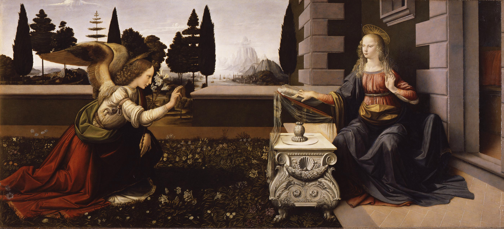
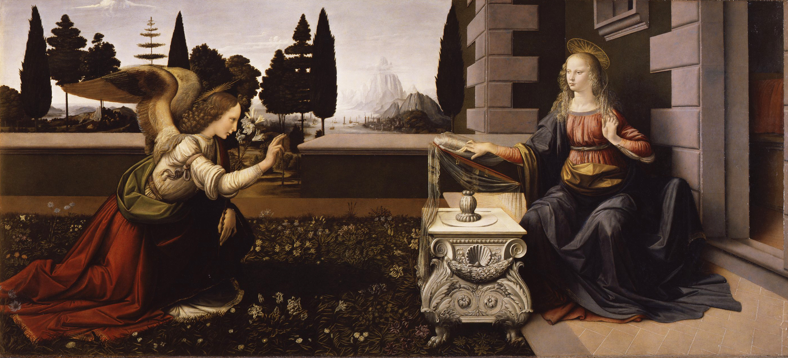

Leonardo da Vinci
About
Leonardo di ser Piero da Vinci (1452-1519) was an Italian polymath of the High Renaissance who is widely considered one of the greatest painters of all time and perhaps the most diversely talented person ever to have lived.
He is known for masterpieces such as the Mona Lisa and The Last Supper, as well as his contributions to various fields including anatomy, engineering, and architecture.
Learn more about him in this Wiki article.
Famous Works


 

Timeline of Life and Contributions
Born in Vinci, Italy.
Apprenticed to Andrea del Verrocchio in Florence.
Moved to Milan to work for Duke Ludovico Sforza.
Completed The Last Supper.
Started painting the Mona Lisa.
Published studies on human anatomy.
Died in Amboise, France.
Some Quotes
-
Learning never exhausts the mind.
-
Simplicity is the ultimate sophistication.
-
The greatest deception men suffer is from their own opinions.